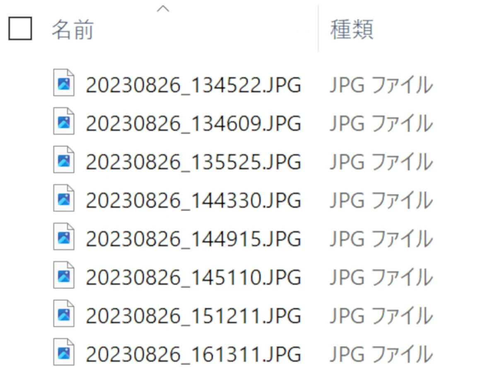
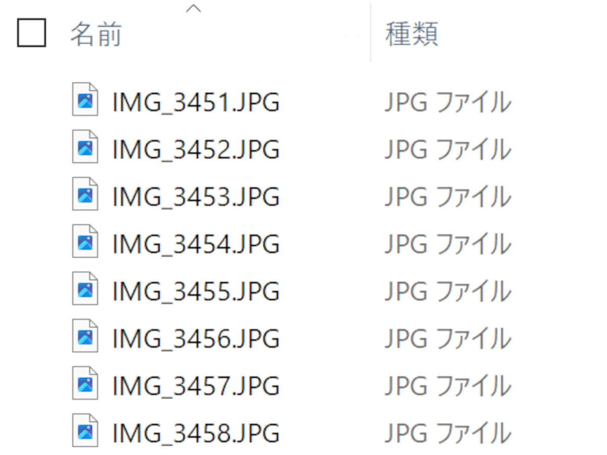
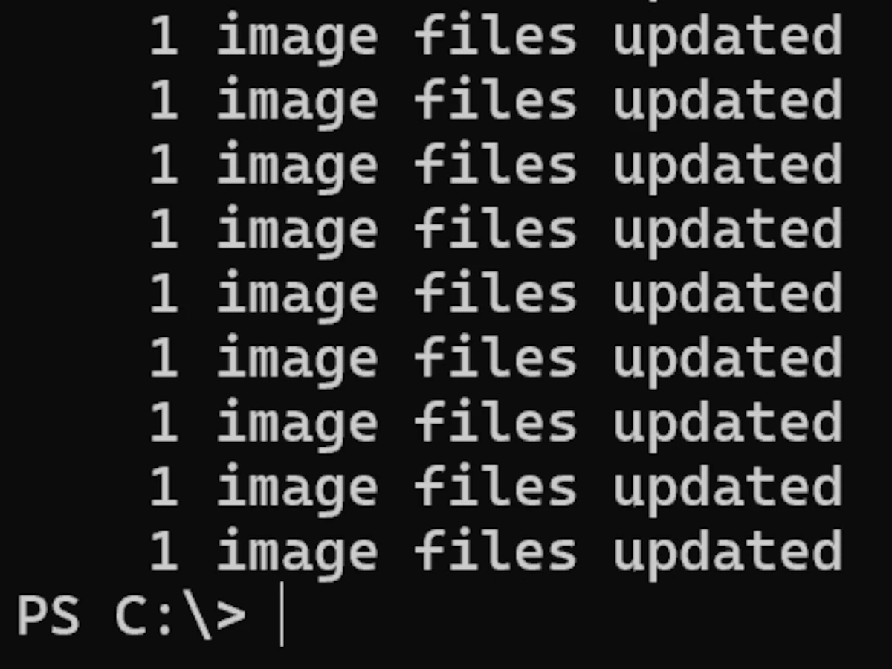

ExifToolを用いてJPGファイルのファイル名を一括編集
数年前より使用していたスマートフォンが故障してしまい、半年前ぐらいからiPhoneを利用しています。
結構使いづらいなと思った点が結構有ったのですが、その一つが撮影したJPGの保存ファイル名。
前機種であるXperiaではPhotographyProを使用すればファイル名が日付_日時.JPGで保存されていたんですね。
具体的には[YYYYMMDD_HHMMSS.JPG]という形式で保存されていました。
しかしながらiPhoneでは[IMG_\d{4}\.jpg]で保存されてしまうんですね。
このままではファイル管理をする際に不便なので変更していこうと思います。
という事でサクっとPowerShellでExifToolを動作させるスクリプトを作成。
これでファイル管理が大分楽になりましたとさ。
ダウンロードは以下のリンクから
JPGFileRenamer.ps1ソースコード等が知りたい方はGithubのリポジトリを参照して下さい。
otenkigirlexe/YoutubeDownloader